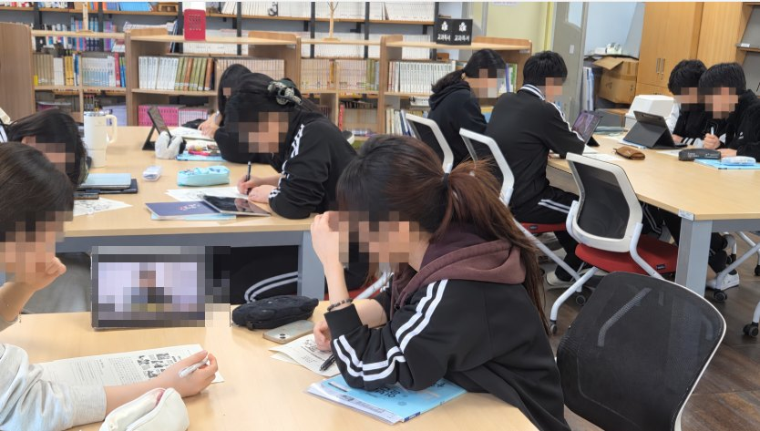
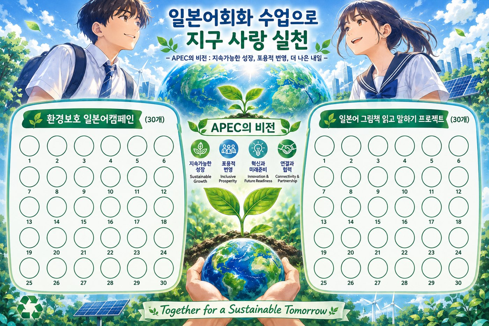
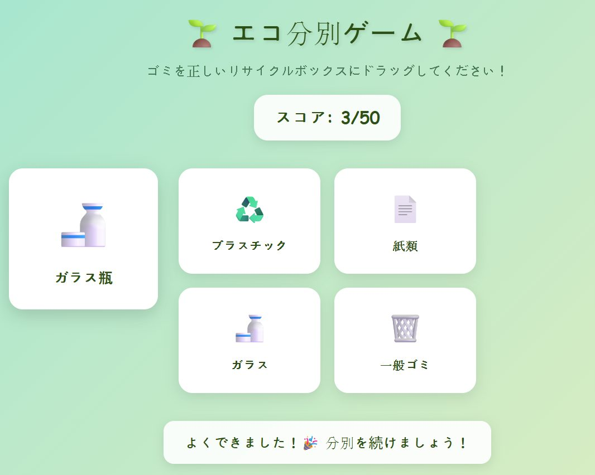
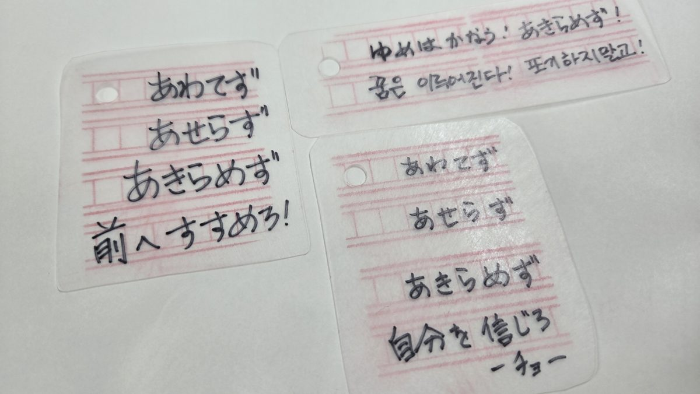
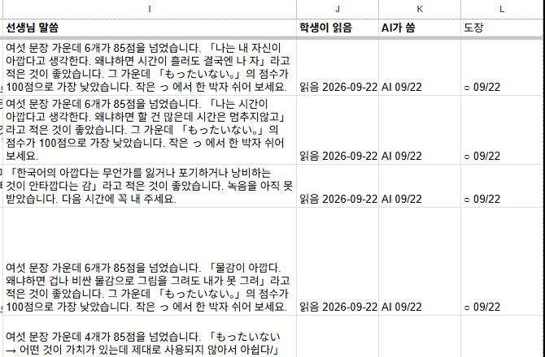
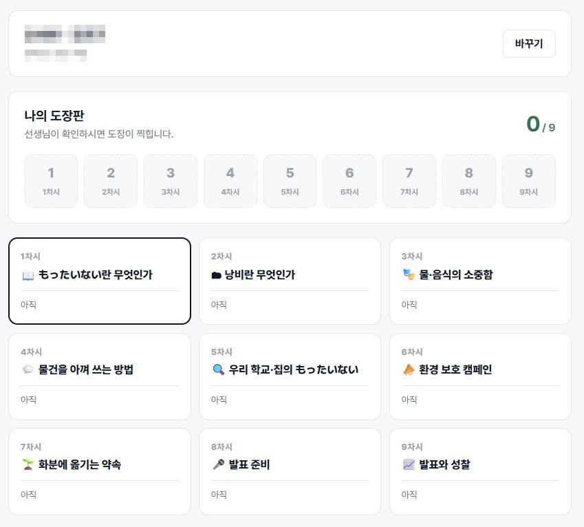

바로 가기
포스터
성과공유회 포스터 (PDF)
목표·내용·흐름·결과를 한 장에
열기 → AI 디지털 도구디지털학습지 「もったいない」
차시별 듣기·말하기·녹음·쓰기 제출, 1·8차시 녹음 비교
열기 → AI 디지털 도구 · 체험다코야키 가게 — 일본어 말하기 게임
Lv.1 다코야키 오리지널(주어진 문장 10개)과 Lv.2 다코야키 토핑 챌린지(내가 쓴 문장 5개). 말하면 AI 음성인식이 알아듣고 철판에 다코야키가 구워집니다. 이름을 받지 않고 기록은 기기에만 남습니다.
가게 열기 → 예시 게임분리수거 온천여행 게임
쓰레기를 바르게 분류하면 일본 온천에 도착하는 예시 웹앱
열기 →수업 자료 (교사용)
한눈에 보기
87명고2 일본어 회화
2개 프로젝트 · 19차시
2개 프로젝트 · 19차시
+0.57사전→사후 평균(5점)
n=56 · p<.001 · d=0.81
n=56 · p<.001 · d=0.81
33.8→84.8%한일 생활문화를
비교해 설명할 수 있다
비교해 설명할 수 있다
59.2→86.4%AI가 고친 이유를
확인한 뒤 받아들인다
확인한 뒤 받아들인다
다코야키 = TA · KO · YA · KI
TA · Talk & AI
말과 AI
AI 음성인식 결과를 원문과 견주어 고쳐 말하고, AI 첨삭은 고친 이유를 확인한 뒤 고릅니다. 1·8차시에 같은 문장을 녹음해 비교합니다.
KO · Kindness & Openness
배려와 열린 마음
한일 분리배출 제도와 생활문화를 견주고, 일본 고교생과 묻고 답하며 우리와 다른 방식에 담긴 이유를 찾습니다.
YA · Your Action
나의 실천
학교 사례를 다섯 낱말 슬로건으로 줄이고, 화분·키링에 약속을 적고, 나 스스로와의 약속 3가지를 게시합니다.
KI · Knowledge & Inquiry
앎과 탐구
그림책 『もったいない』 17장면을 나누어 읽고, 빅카인즈·통계로 환경 문제의 근거를 찾습니다.
수업 흐름 — S.M.I.L.E.
| 단계 | 환경 캠페인 (10차시) | もったいない (9차시) |
|---|---|---|
| S 문제 인식 | 일본 재활용 기호 읽기, 구글 폼 퀴즈로 사전 진단 | 그림책 통독, 공통 여섯 문장 익히고 1차 녹음 |
| M 주제 선정 | 빅카인즈로 일본 환경 정책 분석, 모둠 주제 정하기 | 담당 장면 문장 카드, 말의 형식 비교 역할극·인터뷰 |
| I 탐구 제작 | AI 첨삭 대본으로 공익광고 영상, 바이브코딩 웹앱 | AI 음성인식 실험, 학교 사례 슬로건, 키링·화분 |
| L 발표 공유 | 일본 오카야마 고교와 Zoom·Padlet 교류, 웹앱 전교 배포 | 모둠 발표, 2차 녹음, 학급 결과물집 |
| E 성찰 일반화 | 나 스스로와의 약속 3가지를 급식실에 게시 | 재능도 もったいない — 진로와 잇는 성찰 |
학생 산출물






수업 결과
사전·사후 평균(5점 척도, 두 번 모두 응답한 56명)사전사후
56명 중 47명
평균이 오름(83.9%). 가장 낮던 일본어 자신감이 가장 크게 상승
54.9% → 19.7%
「신문지는 타는 쓰레기」 오개념. 지식 문항 정답률 26.8% → 72.7%
87명 전원
자기 장면을 일본어로 말하고, 1·8차시 녹음 비교로 발음을 스스로 고침
「일본어를 단순히 교과서에서 배우는 언어가 아니라, 실제로 사람들에게 메시지를 전달하는 데 활용할 수 있다는 것을 느꼈다.」학생 성찰문
「처음에는 환경 보호를 개인이 실천하는 작은 행동이라고 생각했지만 … 개인의 실천과 사회의 제도, 구성원의 협력이 함께 이루어져야 한다는 생각으로 달라졌다.」학생 성찰
AI 활용 원칙 — 세 칸 표
AI에게 맡길 일
- 캐치카피 여러 안 만들기
- 웹앱 코드 초안
- 음성 합성·인식
내가 직접 할 일
- 첫 문장은 내가 쓰기
- 고를 이유 정하기
- 직접 말하고 녹음하기
꼭 확인할 일
- 고친 이유와 출처
- 인식이 틀린 까닭
- 보호자 동의·초상권